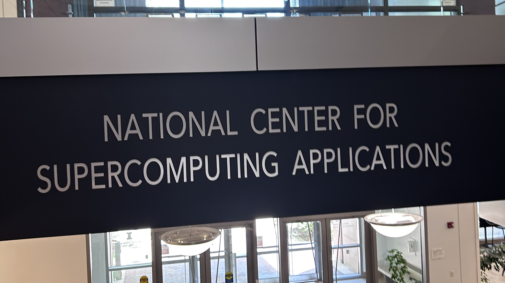
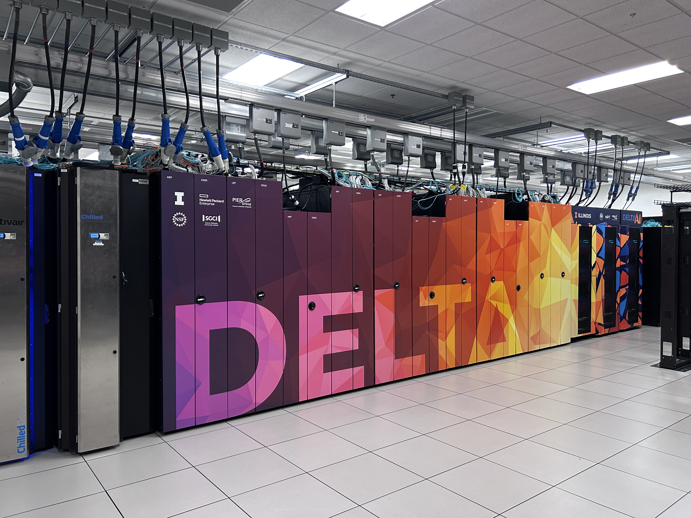

Acknowledgements
FO4DSMPLX was a research project through UIUC's National Center for Supercomputing Applications and Computer Vision and Machine Learning Group under the guidance of Yaoyao Liu and Wei Cao.
Motivation
Existing FreeOrbit4D framework is human-agnostic and therefore:
- Struggles to generate complete human geometries under occlusions
- Does not ensure anatomically feasible/realistic reconstructed human geometries
Objective
- Incorporate parametric human mesh models (SMPL-X) into FreeOrbit4D
- Improve scene reconstruction and camera redirection on human-centric input videos
- Reduce inference time (previously ~50 mins end-to-end per scene)
Methods
Pipeline Upgrades:
- SV4D2.0 + VGGT object completion branch replaced with SMPLest-X
- ViTPose++ introduced for joint-based mesh alignment
- PAGE-4D upgraded to VGGT-Ω for more accurate scene reconstruction


Joint-Based Alignment
SMPLest-X meshes exist in the SMPLest-X virtual camera space and require alignment to the VGGT-Ω global scene space.
Canonicalization
SMPL-X meshes are first canonicalized to enable temporal smoothing.
Pass 1: Framewise Alignment
ViTPose++ joint locations + VGGT-Ω depth maps -> joints positions in global scene space
Calculate optimal Sim3 (scale, rotation, translation) transformation via RANSAC Umeyama on joint correspondences (least squares with outlier robustness)

Pass 2: Temporal Smoothing
Framewise Sim3 transformations are noisy and must be smoothed to achieve temporal and geometric consistency.
- Multi-pass MAD-based outlier detection and interpolation


- Enforced global scale (quality-weighted median)
- Local (sliding-window) translation and rotation smoothing (Lerp, Slerp)


Camera Redirection
- Render depth maps along a desired camera trajectory from the 4D reconstruction
- Extract the first frame of the input video as a visual reference
- Generate a text prompt of the scene with Qwen
Depth maps, reference frame, text prompt -> conditioned Wan2.2-VACE-Fun-A14B video diffusion
Results
- Human-specific extension of FreeOrbit4D
- Temporal and geometric consistency
- 50% reduction in end-to-end inference time (50 -> 25 mins per scene)
4D Human-Scene Reconstruction
Camera Redirection
Gallery

